File: 000570.gt.txt (if the image is defective, simply delete all Arabic text and the line will be excluded)
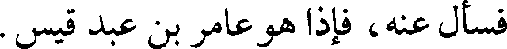
فسأل عنه، فإذا هو عامر بن عبد قيس.
File: 000571.gt.txt (if the image is defective, simply delete all Arabic text and the line will be excluded)
والله الذي لا إله إلا هو؛ ما أطلعنا على أحد من أهل القادسية، أنه يريد الدنيا مع
File: 000572.gt.txt (if the image is defective, simply delete all Arabic text and the line will be excluded)
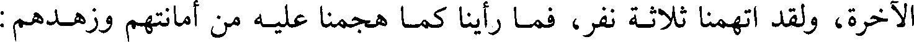
الآخرة، ولقد اتهمنا ثلاثة نفر، فما رأينا كما هجمنا عليه من أمانتهم وزهدهم :
File: 000573.gt.txt (if the image is defective, simply delete all Arabic text and the line will be excluded)
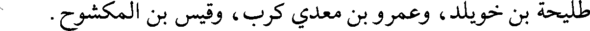
طليحة بن خويلد، وعمرو بن معدي كرب، وقيس بن المكشوح.
File: 000574.gt.txt (if the image is defective, simply delete all Arabic text and the line will be excluded)
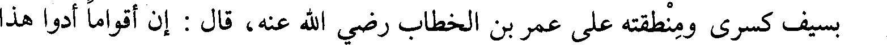
بسيف كسرى ومنطقته على عمر بن الخطاب رضي الله عنه، قال : إن أقواما أدوا هذا
File: 000575.gt.txt (if the image is defective, simply delete all Arabic text and the line will be excluded)
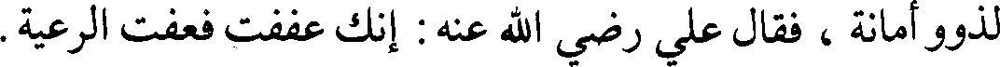
لذوو أمانة ، فقال علي رضي الله عنه : إنك عففت فعفت الرعية.
File: 000576.gt.txt (if the image is defective, simply delete all Arabic text and the line will be excluded)
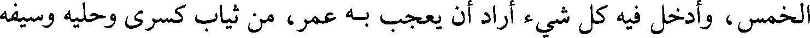
الخمس، وأدخل فيه كل شيء أراد أن يعجب به عمر، من ثياب كسرى وحليه وسيفه
File: 000577.gt.txt (if the image is defective, simply delete all Arabic text and the line will be excluded)
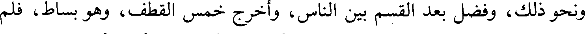
ونحو ذلك، وفضل بعد القسم بين الناس، وأخرج خمس القطف، وهو بساط، فلم
File: 000578.gt.txt (if the image is defective, simply delete all Arabic text and the line will be excluded)
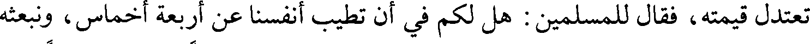
تعتدل قيمته، فقال للمسلمين : هل لكم في أن تطيب أنفسنا عن أربعة أخماس، ونبعثه
File: 000579.gt.txt (if the image is defective, simply delete all Arabic text and the line will be excluded)
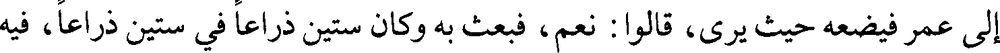
إلى عمر فيضعه حيث يرى، قالوا : نعم، فبعث به وكان ستين ذراعا في ستين ذراعا، فيه
File: 000580.gt.txt (if the image is defective, simply delete all Arabic text and the line will be excluded)
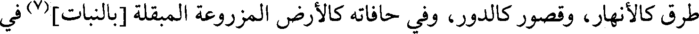
طرق كالأنهار، وقصور كالدور، وفي حافاته كالأرض المزروعة المبقلة [بالنبات](7) في
File: 000581.gt.txt (if the image is defective, simply delete all Arabic text and the line will be excluded)
205
File: 000582.gt.txt (if the image is defective, simply delete all Arabic text and the line will be excluded)
File: 000583.gt.txt (if the image is defective, simply delete all Arabic text and the line will be excluded)
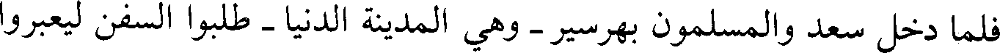
فلما دخل سعد والمسلمون بهرسير - وهي المدينة الدنيا - طلبوا السفن ليعبروا
File: 000584.gt.txt (if the image is defective, simply delete all Arabic text and the line will be excluded)
إلى المدينة القصوى، وهي المدائن، فلم يقدروا على شيء ووجدوا القوم قد ضموا
File: 000585.gt.txt (if the image is defective, simply delete all Arabic text and the line will be excluded)
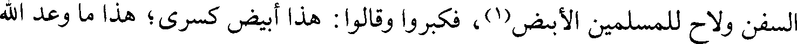
السفن ولاح للمسلمين الأبيض(1)، فكبروا وقالوا : هذا أبيض كسرى؛ هذا ما وعد الله
File: 000586.gt.txt (if the image is defective, simply delete all Arabic text and the line will be excluded)
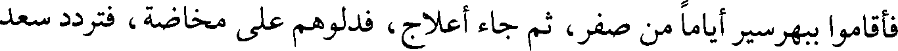
فأقاموا ببهرسير أياما من صفر، ثم جاء أعلاج، فدلوهم على مخاضة، فتردد سعد
File: 000587.gt.txt (if the image is defective, simply delete all Arabic text and the line will be excluded)
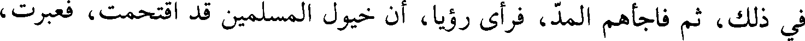
في ذلك، ثم فاجأهم المد، فرأى رؤيا، أن خيول المسلمين قد اقتحمت، فعبرت،
File: 000588.gt.txt (if the image is defective, simply delete all Arabic text and the line will be excluded)
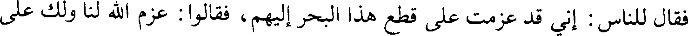
فقال للناس : إني قد عزمت على قطع هذا البحر إليهم، فقالوا : عزم الله لنا ولك على
File: 000589.gt.txt (if the image is defective, simply delete all Arabic text and the line will be excluded)
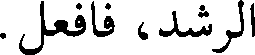
الرشد، فافعل.
File: 000590.gt.txt (if the image is defective, simply delete all Arabic text and the line will be excluded)
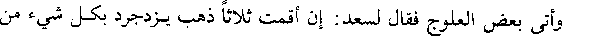
وأتى بعض العلوج فقال لسعد : إن أقمت ثلاثا ذهب يزدجرد بكل شيء من
File: 000591.gt.txt (if the image is defective, simply delete all Arabic text and the line will be excluded)
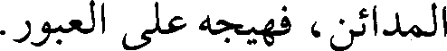
المدائن، فهيجه على العبور.
File: 000592.gt.txt (if the image is defective, simply delete all Arabic text and the line will be excluded)
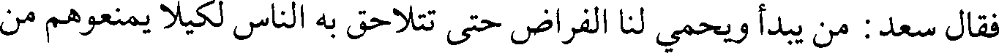
فقال سعد : من يبدأ ويحمي لنا الفراض حتى تتلاحق به الناس لكيلا يمنعوهم من
File: 000593.gt.txt (if the image is defective, simply delete all Arabic text and the line will be excluded)
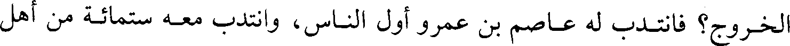
الخروج؟ فانتدب له عاصم بن عمرو أول الناس، وانتدب معه ستمائة من أهل
File: 000594.gt.txt (if the image is defective, simply delete all Arabic text and the line will be excluded)
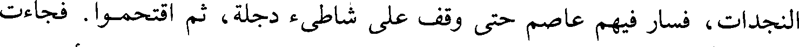
النجدات، فسار فيهم عاصم حتى وقف على شاطئ دجلة، ثم اقتحموا. فجاءت
File: 000595.gt.txt (if the image is defective, simply delete all Arabic text and the line will be excluded)
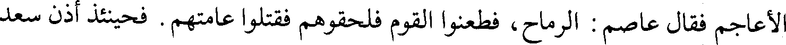
الأعاجم فقال عاصم : الرماح، فطعنوا القوم فلحقوهم فقتلوا عامتهم. فحينئذ أذن سعد
File: 000596.gt.txt (if the image is defective, simply delete all Arabic text and the line will be excluded)
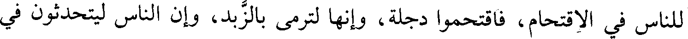
للناس في الاقتحام، فاقتحموا دجلة، وإنها لترمى بالزبد، وإن الناس ليتحدثون في
File: 000597.gt.txt (if the image is defective, simply delete all Arabic text and the line will be excluded)
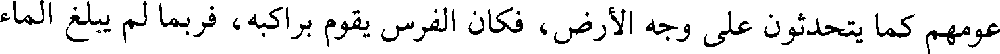
عومهم كما يتحدثون على وجه الأرض، فكان الفرس يقوم براكبه، فربما لم يبلغ الماء
File: 000598.gt.txt (if the image is defective, simply delete all Arabic text and the line will be excluded)
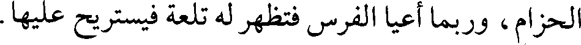
الحزام، وربما أعيا الفرس فتظهر له تلعة فيستريح عليها.
File: 000599.gt.txt (if the image is defective, simply delete all Arabic text and the line will be excluded)
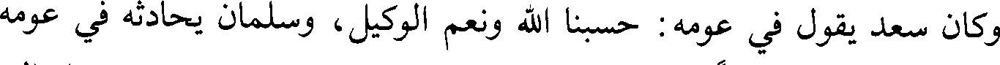
وكان سعد يقول في عومه : حسبنا الله ونعم الوكيل، وسلمان يحادثه في عومه
To Save: `Ctrl+s`, make sure to choose `Webpage, complete`!